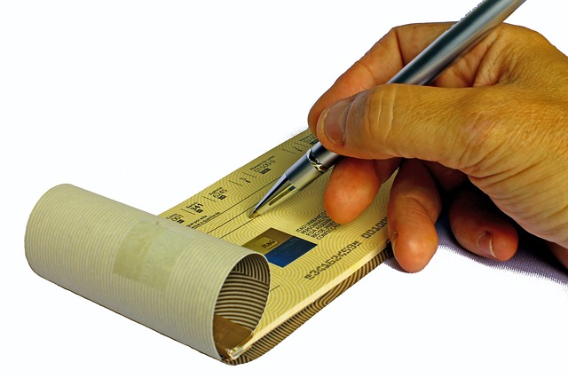

Q: How do I buy a house? Where do I even begin?
*this guide is relevant to those looking to buy a house in Canada, and more specifically, Ontario.
Disclaimer: This tutorial is meant to provide an unbiased guide on the steps you should take to buy a house. I have no affiliations with any service providers or companies.
OFFICAL  TUTORING HOW TO: Buying a Home in Ontario, Canada
TUTORING HOW TO: Buying a Home in Ontario, Canada
Steps (click on the link below to go to that step)
1) Get Pre-Approved for a Mortgage
2) Optional Step: Get a Real Estate Agent
3) Look for Houses
4) Set up a Viewing for a House You Are Interested In
5)
Put an Offer on a House
6) Submit your Deposit to the 'Vendor's Solicitor', aka the Deposit Holder
7) Get a Home Inspection
8) Get a Mortgage
9) Get a Real Estate Lawyer
10) Get Home Insurance
11) Visit the House Just Before Closing
12) Closing Day
13) Set Up Your TV and Internet
14) Track Your Utilities
15) Other Post-Closing Steps
- Get Pre-Approved for a Mortgage
 A good first step is to get your credit report. You can obtain your credit report (without your credit score) for free from Equifax and/or TransUnion. This is called a 'Consumer Disclosure' (it will cost you money if you want to see your exact credit score). It allows to see if there are any mistakes on your credit report so that you can clear them up before a mortgage lender checks into it. Also, some banks will allow you to check your credit score for free. For example, with CIBC, you can access your credit score with the CIBC Mobile Banking app (so you can only check with your phone). Checking your credit score through the app does NOT negatively affect your credit score. However, it will only provide you with your overall credit score number and will not provide any details (e.g. credit cards on file, late payments, etc.) like the Equifax and TransUnion credit reports will. Here is a link to the CIBC Free Credit Score Service for more information. Obtaining both the credit report (from Equifax or TransUnion) and credit score (from your bank) will allow you to get all the information you need for free.
A good first step is to get your credit report. You can obtain your credit report (without your credit score) for free from Equifax and/or TransUnion. This is called a 'Consumer Disclosure' (it will cost you money if you want to see your exact credit score). It allows to see if there are any mistakes on your credit report so that you can clear them up before a mortgage lender checks into it. Also, some banks will allow you to check your credit score for free. For example, with CIBC, you can access your credit score with the CIBC Mobile Banking app (so you can only check with your phone). Checking your credit score through the app does NOT negatively affect your credit score. However, it will only provide you with your overall credit score number and will not provide any details (e.g. credit cards on file, late payments, etc.) like the Equifax and TransUnion credit reports will. Here is a link to the CIBC Free Credit Score Service for more information. Obtaining both the credit report (from Equifax or TransUnion) and credit score (from your bank) will allow you to get all the information you need for free.- What can I afford? The first step in the homebuying process should be to figure out 'how much' house you can afford. A common rule is that monthly housing costs should not be more than 35% of your household income. Check out the CheckMark Tutoring tutorial on the costs of owning a home to determine what sorts of costs you should account for to buy and maintain a house. Ratehub.ca has an excellent mortgage calculator that allows you to find out what kind of mortgage you can afford with all costs of buying a home laid out for you. You can play around with the mortgage calculator to see how your monthly mortgage payments will be affected (e.g. change the size of your downpayment, mortgage term, amortization, asking price of the house, etc.).
- Shop around for the best rate, but keep in mind that the interest rate is only one part of the mortage. Look for mortgages that have low penalties to break the mortgage. It is important to keep in mind that 80% of all Canadians do not finish their mortgage terms. You can get mortgages through banks, trust companies, credit unions, insurance companies, etc. There is no harm in checking them all out (each mortgage will have different terms and conditions).
- Mortgage Broker: Once you have received a couple of pre-approvals on mortgages, take these to a mortgage broker and have them explain to you why they can offer you something better. This allows you to use the knowledge of the mortgage broker to explain the pre-approved mortgage terms and also determine whether there is really something better to be had. Make sure that you find a reputable and highly reviewed broker (they were not all created equally!). They will do preapprovals for no charge. Even if you end up getting a mortgage through a bank, you can use the information they give you in your negotations and they may even find you a better mortgage in the end. So there's no harm in checking them out. In fact, you can check multiple mortgage brokers out since it won't cost you anything. You may wish to ask the mortgage broker to see their rate and commission schedule to ensure that they aren't hiding lower rates in order to get you signed up with a lender that pays a higher commission to them. Do not feel that you have to commit to anything that they offer.
*Understand some terminology when shopping around for a mortgage:
- What does 'term' mean? The interest rate is fixed for the term (length of time that the mortgage contract conditions including interest rate are fixed) of the mortgage. The interest rate is usually renegotiated at the end of the term of the mortgage. The most common term is for 5 years, although I would recommend that you look for a shorter term mortgage (e.g. 1 or 2 years) since on average most people do not make it through a 5 year term mortgage without breaking it.
- What does 'amortization' mean? This refers to the length of time that it will take to pay off the full mortgage. A longer amortization means that you will have lower monthly payments but will end up paying more interest on your mortgage loan by the time you have paid it off. The most common amortization is 25 years.
- What is the payment schedule? You have the option of paying repaying your mortgage monthly, bi-monthly, bi-weekly or weekly. The more frequent your payment schedule is, the less overall interest you have to pay on your mortgage.
- What interest rate type should I choose? 'Fixed' or 'variable'? A fixed rate will not change during the term of the mortgage, whereas a variable rate will change as the market does (slight risk that the interest rate could go up and you might have to pay more). Generally a interest rates have stayed low for the past couple of decades and variable rates are fairly safe (and recommended by mortgage brokers), but some people prefer the peace of mind of a fixed rate mortgage.
- What is the difference between an 'open' and 'closed' mortgage? An open mortgage allows you to pay off your mortgage at any time (fully or in part) without having to pay additional fees. With open mortgages, you are not locked into a certain rate or term. However, you will pay a higher interest rate for this added flexibility. They are usually a good idea if you plan to sell your home in the near future.A closed mortgage offers lower interest rates, but you will have to pay penalties if you make additional payments. A closed mortgage is most common.
- Don't get a 'collateral' mortage (if possible). Ask and find out whether the mortgage is a conventional or collateral mortgage and don't assume you are being given all of the information and don't accept 'I'm not sure' as an answer to your questions. With a collateral mortgage, an amount higher than your actual mortgage loan is registered against your home (e.g. if you house costs $450,000 and you need a $300,000 mortgage, the mortgage lender could register a $450,000 or more loan). A conventional mortgage would only register a $300,000 charge against the title if you needed a $300,000 mortgage. The mortgage lender is lending you enough for your home purchase and nothing more, whereas a collateral mortgage can lend you an amount higher than what you need for a mortgage (125 percent of the total). A collateral mortgage would allow you to get additional loans from your mortgage lender during your mortgage term (e.g. by taking out a line of credit) without additional legal/administrative costs BUT it will also make it more expensive to move to another lender at the end of the term (as you essentially will have to get a whole new mortgage, meaning you have to pay the old one off and set up a new one, which means more legal fees). A collateral mortgage is non-transferable so you cannot switch your mortgage to another lender without paying additional legal fees to discharge the mortgage (no cost for transferring a conventional mortgage when the loan amount and amortization don't change) and this can only be done if you are mortgaged at 80% or less of your home's value (otherwise, you are stuck until you have paid down enough debt or the home's value increases). The additional fees you would pay to 'refinance' your mortgage at the end of a collateral mortgage term are around $900 on average. A lawyer would discharge one mortage and register a new one. Some mortgage lenders will not want to take on the added risk of taking over a collateral mortgage from the lender that placed the inital charge on the mortgage. You would be able to avoid these fees if you paid your mortgage off in full at the end of the term as you would only have to pay two standard charges (which are standard for a conventional or collateral mortgage): a mortgage discharge fee (approx. $250-$300) and land title registration ($115 in Ontario) to remove your mortgage lender's claim to the title of the house.
- What do I need to get a pre-approval for a mortgage? This depends on the bank/mortgage lender. The big banks often just require some basic information from you including your Social Insurance Number (SIN) so that they can check your credit report. Other mortgage lenders may require more documentation to verify your income such as your 2 most recent pay stubs or your most recent years T1-General (first 4 pages) and most recent notice of assessment. Some other things that may be required (or coudl be useful): proof of all sources of income, proof of financial assets, proof of source/amount of down payment, and information on all bank accounts.
- Find out if an up-to-date property survey (look like a map that includes right-of-ways/easements, property lines, lot size, etc.) will be required by your mortgage lender. If they do not require an up-to-date property survey, the will likely require title insurance. Title insurance will be much cheaper than obtaining a new survey.
- Ask potential mortgage lenders about any additional costs that might come with their mortgage. If you don't ask, you won't know! Ask about the following: application fee, appraisal fee, land survey fee (some mortgage lenders will require a survey) and mortgage broker fee (if you used a mortgage broker). It is also a good idea to ask your mortgage lender to give you a list of ALL additional costs that are not related to interest payments.
- Ask if the mortgage will be compounded monthly or semi-annually. Compounding monthly can lead to a big increase in the overall cost of the mortgage.
- Keep in mind that being pre-approved for a mortgage is not your final step in getting a mortgage. A pre-approval on a mortgage will likely hold an interest rate for a specific period of time (usually up to 120 days). You will need to complete a mortgage application once an offer that you put on a house has been accepted. In fact, once an offer on a house has been accepted and the banks/lenders know that you are serious about obtaining a mortgage, you can begin to negotiate with them for a lower mortgage rate.
- OPTIONAL STEP: Get a Real Estate Agent
- The real estate agents job is mainly to find you an ideal home based on what you have told them, write an 'Agreement of Purchase and Sale' (Offer of Purchase), negotiate to get you a good deal and give you information about the community.
- The real estate industry will tell you that it always makes sense to get a real estate agent if you are in the market to BUY a house. The reason for this is that the seller is the one paying the commissions to both the selling agent and buying agent (e.g. seller pays a 5% is commision that is split equally between the buying agent and the selling agent). The reality is that the buyer pays the commission indirectly through the purchase price, but it is unlikely that you would save much money if you don't purchase through a real estate agent. If you are buying privately (e.g. friends/family) then you will only need a real estate lawyer to draw up an Agreement of Purchase and Sale (the offer for the house) so a real estate agent isn't needed and you can avoid paying unnecessary commisions.
- Should I sign a 'Buyer Representation Agreement' if a real estate agenet asks me to? This is not necessary and is really only useful for the real estate agent. The Buyer Reprsentation Agreement is a contract that some real estate agents want people to sign to ensure that the homebuyer is committed to them for a specific period of time (e.g. 3 months, 6 months, etc.). If you sign this contract, you will owe a commission to that real estate agent regardless of whether they did any work to get you a house if you buy during the period of time outlined in the contract. Do NOT sign this contract unless you really trust the agent you are working with (and even then it shows a lack of trust on their part for wanting you to sign the contract).
- Look For Houses
- One of the benefits of having a real estate agent is that they can provide you with the MLS (multiple listing service) that updates more frequently than the realtor.ca website. In the end, whatever shows up on the real estate agent's MLS that they send you will also end up on Realtor.ca.
- Download the Realtor.ca app for your phone and/or go to Realtor.ca to find houses that are up for sale. This is by far the most reliable and up to date source for finding out what is up for sale in your area and is used all across Canada.
- 'ComFree' has its own app that you can use to search for house listings that do not involve a selling agent. These 'ComFree' listed houses will also show up on the Realtor.ca app and the Realtor.ca website.
- Although rare, it is recommended that you look in newspapers for houses that are up for sale since sometimes they may not be listed in MLS.
- Where do I buy 'foreclosures'? For those who don't know, a foreclosure is when a mortgaged property is taken over (e.g. by the bank) because a mortgagor (borrower) is unable to keep up with their mortgage payments. In Canada, we have 'power of sale' rather than foreclosure (which is more common in the U.S.). A foreclosure and power of sale are similar processes, but there are some differences. Unlike a foreclosure, the mortgagor (borrower) remains the title holder of the property in a power of sale and if a house has appreciated in value, then the extra money will go to the mortgagor (borrower). Another important difference is that in a power of sale, the property will be sold with a realtor most of the time, while a foreclosure is usually sold through an auction. It is useful to know that power of sale properties will appear on the MLS (and Realtor.ca) like every other property. However, in the description for the home it will say that the seller is (a bank) by 'power of sale', rather than an actual person.
- Set up a Viewing for a House You Are Interested In
- What questions should I ask the seller? Ask how long they have owned the house, the purchase price of the house, sales and renovation history of the house, what repairs and improvements have been made, how old are the major structural and mechanical systems in the house (e.g. windows, roof, furnace, air conditioning, plumbing, electrical), has there been any problems with water and waste drainage, has the fireplace chimney been cleaned on a yearly basis (if there is one).
- What information should I find out about the seller? Ask about the seller's occupation. This can sometimes give you an idea of what kind of owner they might have been. Find out if the owners or any previous owners smoked in the house. Ask why they are moving.
- What documents should I ask for from the seller? You should ask for home inspection reports, work permits/inspection reports from any work done during the time that they owned the house, warranties for any new building materials (e.g. windows, shingles, siding, etc.), warranties/manuals for appliances included with the house, a copy of the previous year's utility bills so you have a better idea of heating and cooling costs.
- When should I go to the house? If possible, see if you can visit the house after a heavy rainfall and go straight to the basement. If it smells or feels damp then water may be getting in and this is a major warning sign. If the house smells bad AND has new paint, then that likely means there is an issue somewhere. You should be able to find out beyond a doubt what this smell is (if you put a conditional offer in, then ensure that the home inspector identifies it). If possible, find out what mould smells like so you can detect it better. Another good idea after a heavy rainfall is to look to see if the water is draining away from the house. This is very important. Keep going back to the house at different times of the day. Walk down the street and look at how well cared for the homes in the area are. It will also give you an idea of what traffic is like on the street. Knock on the doors of the neighbours on either side of the house you are interested in OR if you want to find out about the neighbours you will be living beside then knock on the doors of their neighbours.
- Pay close attention to the areas of the home that would be expensive to repair if there are issues such as the roof, furnace (costs up to $5000 to replace), plumbing, electrical, windows and the foundation. Ask about the age of each.
- During your tour of the house, flush the toilets and run the tap to check the water pressure and see if there is any leakage. Open and close all of the windows, peek under rugs to check for cracks, etc. Make yourself at home!
- The cleanliness of the house can also be a factor. A clean house is usually an indicator that a home has been well cared for. Look in the closests, behind toilets, under the couches and in the window tracks.
- Ask about what renovations have been done and who did them. New renovations means they could have been covering something up behind the new drywall. If an older home has had major changes done to the building in the last 20 years, then you will want to see permits (e.g. Ontario's Building Code issues permits for construction, renovation, demolition and changes in the use of abuilding). If any renovations were done, ask for proper building permits for any major work. A basement renovation requires permits for structural changes, plumbing, electrical and HVAC. A seller should be able to provide you with these permits if you ask. If not, you have a right to be a little worried.
- Find out if the appliances are included and determine the age of the appliances. Once again, make sure that they actually work properly.
- Try to locate any drafts in the house and determine why they are occurring (e.g weather stripping is frayed will not be a costly fix).
- An older home is not necessarily worse. The 'golden age of homebuilding' is often considered to be be in the mid 1950s and 1960s but these homes come with challenges as well (e.g. possibility of asbestos). The reason for this is that the mininmum building standards are not has high as they used to be.
- Find out how often this house has been sold/changed ownership (lots of sales can indicate problems). Also find out the prices of properties that have sold in the area to determine if the house is priced correctly.
- Income property: If you are planning on renting all or part of the house out, you should make sure that city zoning and use bylaws permit this (even if the house was already being rented out).
*What to pay attention to when looking at a house:
- Foundation/Structural: Cracks are a major warning sign (look for these when doing a perimeter check of the home). Not all cracks are serious (e.g. new homes might have small cracks due to the concrete curing process), but you should definetely be concerned and find out exactly why that crack is there.
- Walls: There should be a thermal break for walls of the basement (e.g. 2-inch rigid foam board or closed-cell spray foam insulation). If the basement is not insulated with a proper thermal break, then you will have to run a dehumidifier (especially during the summer). Ask to seem building permits/inspections in older homes that have been renovated to be an open concept design to ensure that the structure of the house (e.g. load bearing walls) isn't an issue. The trim around the walls should be filled in all the way (e.g. with caulking) so there are no gaps. This isn't a huge issue if it isn't done correctly but it will give you an indication of how well a job/renovation was done. Keep an eye out for any cracks in the walls on the interior of the home. This could indicate structural issues.
- Flooring: Basement floors should have a thermal break under the floor material. Carpet, tile, linoleum or vinyl should not be placed directly onto a concrete basement floor. Sealant on the grout in tiles should never be done since the grout needs to breathe (water should be able to escape to avoid moulding). In order to check the thickness of the flooring, you can lift the vents on the floor (heat registers/cold air return grills). This allows you to see the subfloor. You can check the joists by going to the basement, but another way to do this is to feel for any bounce in the floors on the mainfloor when you are walking around. This indicates a joist issue. Cracks in tiles likely means that the subfloor is subpar. Bring a golf ball, set it down on the floor and see if it rolls. This will allow you to find out if there is any sloping inside the house which is a serious problem especially if the sloping is towards exterior walls.
- Ceiling: A drop ceiling is better than a dry wall ceiling in the basement since it allows easy access to electrical, etc. that drywall would cover up. The problem is that the drop ceiling will provide less headroom.
- Landscaping: Trees should be away from the house. If the branches are able to reach the house, that means that the roots have also reached the house since they spread twice as far. Roots can cause problems for your plumbing and possibly the foundation. If plants are beside the foundation (never a good idea), then at least ensure that they don't need to be watered.
- Drainage: Downspouts should empty at least 6 feet away from the foundation. Landscaping should be at least 6 feet away from the house. Ideally your home will be on high ground so that water will naturally drain away from the house. A house in a low ground area will have more water issues. Ground that slopes towards the house or is flat is a grading problem. Check to ensure that window wells have proper drainage (the window well should be filled with gravel and you should see the end of a length of drainage that should also be filled with gravel - called the weeping tile). Weeping tile systems often stop working after about 30 years (this can be inspected and scoped with a camera). Check the eavestroughs (should be clear of debris and draining properly). There should be a downspout for each length of gutter and should deposit water on soil that slopes away from the house. It is not ideal to need a rain barrel or splash block and the downspouts should not pour water into the weeping tile. Moss that is growing near the foundation is a sign of a lot of moisture.
- Roof: Ask about the age of the roof. It should be no more than 15-20 years old. A new roof can cost around $10,000. Flat pieces of roof are not ideal as they allow water to build up and flat roofs should definetely not have shingles on them. You should also see flashing (a strip of metal used to stop water from penetrating junction of the roof with another surface) where the siding meets the roof line. The roof should not have more than 2 layers of shingles.
- Ventilation: Ventilation is important in areas of the house that are prone to moisture such as the kitchen, bathrooms and laundry room. Minimum building code says that bathrooms should have at least a working window or exhaust fan to remove humid air. Ideally you would have both. Always make sure that exhaust fans vent to the outdoors or it will cause condensation, moisture and mould. A musty smell in the basement indicates mould has developed. Kitchens should have a ventilation systemthat exhausts to the outdoors and should be somewhere above the stove. The vent stack (which is usually on the roof) should be more than 6 inches above the roof so that it doesn't get blocked with snowfall or any other debris.
- Windows: Vinyl windows are the best choice for windows (metal has more heat loss and doesn't last as long, while wood requires much more maintenance). The red flags for windows are heat loss (e.g. drafts when the window is closed) and moisture (e.g. condensation means water is getting in and there could be additional water damage behind the wall). It is ideal to have at least two panels of glass (double pane or triple pane). Make sure the caulking on the outside of the windows is in good shape.
- Kitchens: The most expensive part of the kitchen is the cabinetry. Solid wood cabinets are the best. Check the thickness of the cabinet (the thicker, the better). The back of the cabinet should feel firm without any bend when you push on it. Slides for drawers should ideally be ones that are installed underneath the drawer (side sliders are cheaper). Granite is the ideal countertop. Look underneath the kitchen counter where the sink is to make sure that the sink was sealed properly and that there are no signs of leakage/mould. GFCI outlets should be used close to any water sources (within 3 feet). The kitchen should have windows that are able to open and fans that allow moisture to escape. Turn on the fans to make sure that the fans actually vent to the outside and not just into a wall cavity (might be done in a poor renovation). You can also use a tissue/paper towel to check the the fan is strong enough (should be able to stick a tissue to it).
- Bathrooms: Should have both a fan and a window (although you only have to have one of them). Feel the floor for softness on that indicate water issues). Check the water pressure in both the sinks and toilets. Check the drain in the shower.
- Plumbing: Check the water pressure on the top floor of the house (where it is likely the weakest) to see if it seems fine. It is a good idea to check all taps and toilets throughout the house. A slow draining sink or toilet or one that makes a gurgling sound could be an issue. If the house you are looking at has a well and/or septic system, find out when they were last tested and when the septic system was last cleaned. There should always be a trap in plumbing underneath any sinks to prevent sewer gases from coming up.
- Furnace: Test it out! Turn the furnace on and check all of the vents while the furnace is running to see that it is actually working. Forced air gas furnaces last about 20-30 years. If it is a forced air furnace, find out if it is a conventional, mid-efficiency or high-efficiency furnace. Check the date of manufacture stamped on the blower unit on the furnace. Furnaces should be cleaned regularly and should have tags left on the furnace to indicate this. There should not be any dirt/rust inside the furnace. If you notice space heaters in the house, this is a sign that the furnace may not be working very well.
- A/C: A/C units last around 10-15 years. The age of the units can usually be found by looking at the sticker on the compressor. A water-cooled unit that is kept indoors will likely last longer. Unfortunately, you will not be able to test the air conditioner out during a Canadian winter since this could potentially damage it.
- Hot Water Heater: Hot Water Heaters last around 10 years. There should be a tag on the hot water heater if it is a rental unit indicating that maintenance was performed.
- Electrical system: 100 amp service is OK and 200 amp is even better. You should see separate receptacles for all major appliances in the kitchen.
- Heat source: The cheapest heating source is natural gas, followed by ground source, air source, seasoned wood, electric furnance and then oil.
- Light fixtures: There should not be recessed lights in the top floor of the house (this creates heat in the attic which you don't want as it is supposed to be a cold zone).
- Bills: Ask the seller about the cost of paying property taxes, electricity, water, gas and the hot water tank rental. Compare this to other houses that you have been interested in. There is nothing wrong with asking to see copies of their bills (e.g. ask for a copy of their utility bills for the previous year to get an idea of costs for the entire year regardless of the season).
- Property survey: Ask if the seller has a property survey or a 'Certificate of Location'. There is no harm in asking! It is useful to have as it notes your property lines, everything on your lot (e.g. pool, gazebo, additions) and any easements for power lines, sewer lines, gas lines, phone/cable lines, etc. If you obtain title insurance, it will allow you to be protected from any costs associated with incorrect lot dimensions (e.g. told you have to move your fence lines), but in the end you will not get back that extra land you thought you had. So it is up to you if you feel that obtaining a house without a property survey is a risk you want to take. You can pay for a property survey to be done by an Ontario land surveyor if the seller does not provide it but this could cost you upwards of $1000. If you notice that something doesn't show up on the property survey that is currently on the property (e.g. swimming pool, separate apartment), talk to your real estate lawyer about your options.
- Appliances: If appliances are included then ask for manuals, warranties and proof of age.
- Put an Offer on a House
- Before you put an offer on a home, I would recommend that you have a chance to look over a property more than once (just in case you get a different look). If you are using a real estate agent, I would also have the real estate agent's offer sheet (aka Agreement of Purchase and Sale) looked over by a lawyer, especially if this is the first offer that you have put on a house with that real estate agent. This will also ensure that everything included in the agreement is to your liking and be confident about putting offers in on houses in the future. Real estate lawyers will generally not charge you to look over an offer.
- What if I'm not using a real estate agent and want to put an offer on a house? If you are not using a real estate agent, then you will want to have a real estate lawyer prepare the 'Agreement of Purchase and Sale' (aka the offer). Most real estate lawyers will not charge you for doing preparing the Agreement of Purchase and Sale as they expect that you will give them your business if the offer is accepted. Generally, lawyers will charge around $850 for their services regardless of whether you use a real estate agent or not. This price does not include HST, other disbursements, title insurance, and possible Land Transfer Tax which would be additional to that fee. In order for the real estate lawyer to prepare an offer, they will need the lot, plan, size and address of the property. This can all be found in the property survey which you should ask to get from the owner. The lawyer will also need to know the names of the purchasers of the property (e.g. you and your signficant other), the names of the owners (sellers) of the house, offer price, deposit amount, closing date, rental items (e.g. water heater) and what should be included with the house (see 'Inclusions/Chattels below).
- Your offer should also include all of the documents that you want to receive from the sellers at the time of closing (e.g. property survey, warranty documents, etc.).
- Below are two images that comprise the entire Agreement of Purchase and Sale that was used to buy a house with all personal information blacked out. Click on the images below to analyse them more closely.
 Example.png)
 Example.png)
*What are some parts of the 'Agreement of Purchase and Sale' that I should make note of?
- Deposit: A deposit does not have to be included with the Agreement of Purchase and Sale (your offer), but it is often a good idea to include it to show the seller that you are a serious buyer. This deposit, which is usually around $10,000 to $15,000 on a $500,000 house, will be returned if the offer is not accepted. See the next step in this guide for more details about the deposit.
- Irrevocabilty (aka seller response time): You can ask for the sellers to respond to your offer within a certain amount of time. It is not unreasonable to expect a response within 4 to 24 hours. The seller can accept the offer, counteroffer, or reject the offer.
- Completion Date (aka Closing Day): This will indicate the date at which you will become the owner and take possession of the home. Often this is around 30-60 days after your offer has been accepted
- Inclusions (aka Chattels): Mark everything down that you expect to receive in the house and make sure you put it in the 'Chattels Included' section of your Agreement of Purchase and Sale (usually page 2). There have been reports of people taking the shed from the backyard so it is always better to be safe than sorry. Some things to consider as inclusions: fridge, dishwasher, microwave, washer, dryer, draperies, all electrical light fixtures (ELFs), window coverings, deep freezer, fireplace, shed, garage door opener (with remotes) and hot tub (with accessories). Another chattel you may want to consider is to include warranties (if transferable) and manuals for appliances (fridge, dishwasher, microwave, stove), air conditioner, furnace, windows, shingles, hot tub, etc. You should also include a statement at the end of the Chattels section saying "All to be left in good working order on closing".
- Conditions: In order to protect yourself as the buyer in your offer to purchase a house (known as the 'Agreement of Purchase and Sale'), your real estate agent should include conditions in 'Schedule A' of the Agreement of Purchase and Sale.
- The most common condition is that the offer is only good if the house passes an home inspection. The wording is usually as follows, "This offer is conditional for a period of 5 business days from the date of acceptance upon the following: An inspection of the subject property by a home inspector at the Buyer's expense, and the obtaining of a report satisfactory to the Buyer in the Buyer's sole and absolute discretion, failing which this agreement will be null and void and the purchaser's deposit shall be returned in full without interest or deduction." The way that this condition is worded, it is the buyer who will determine whether they are happy with the home inspection and the reality is that it provides a way out for the buyer. This condition would allow the buyer to void the offer even if they get cold feet (although they must at least have a home inspector look at the house), as the buyer could use anything in the home inspection to say it was unsatisfactory to them. Other than the cost of the home inspection, the buyer would be on the hook for nothing.
- Another common condition to include is a financing condition for 5 business days. The bank will require an appraisal for a home that was listed privately so it is usually a good idea to include this condition unless you are confident in your ability to pay for the house outright (no mortgage).
- You should also include a separate septic system inspection in you offer if the house has a septic system and you want to ensure it is in working order.
- Another condition to consider including if you don't trust your real estate agent or want to have peace of mind that the Agreement of Purchase and Sale is worded correctly (and haven't had time to do it already), you could also include that "this offer is subject to the approval of the Buyer's lawyer". Rather than include it as a condition, you could also have your real estate lawyer check over your Agreement of Purchase and Sale prior to submitting it (mentioned earlier in this step).
- If there is a hot tub included as a chattel with the house, then you can include a condition that states, "The vendor agrees to fill the hot tub and have it in operating condition prior to closing".
- Make sure to include a clause that states that you will have an opportunity to look through the house prior to closing (typically 3 times). It may be worded as "The purchasers shall have the right to inspect the property up to three additional times prior to closing, upon reasonable notice to the vendors"
- Final Walk-Through: Specify that you will have the right to walk through the house a day or two prior to the final closing date so that the seller does not have time afterwards to make big changes or cause any damage before you get to move in.
- Property Survey: You can request that a property survey be provided to you. The sellers should provide the buyer with a survey/property report and this is usually written into the standard Agreement of Purchase and Sale (but it is a good idea to make sure it is in there!). In the offer sheet that is provided on this webpage, Paragraph 11 of the offer says the vendor will turn over any survey.
- Title Search: This is found in Paragraph 8 on the offer sheet that is provided. A date that is approx. a couple of weeks before closing will be included that allows the purchaser until that time to conduct a title search.
- The offer will either be accepted, rejected or a counter-offer will be made. Any small changes (e.g. price change, inclusions/chattels added) in the offer can be crossed out with a pen and initialled by all parties (e.g. often a total of 4 signatures will be needed for both couples involved in the transaction). Once all signatures are provided on the offer sheet and dated, the clock begins ticking on the conditions you included. For example, you will have 5 business days from the date of the vendors (owners) signing of the offer sheet to obtain your home inspection.
- Tips for a Hot Seller's Market: If possible, try to get into a house during the week and put an offer in before the weekend to avoid weekend open house competition. Although some sellers will state in the MLS listing 'no preemptive offers', there is no law against putting an offer in before the listing says they will take offers. Present a certified cheque with your offer (and feel free to include more than the required deposit amount since it will go towards your downpayment anyway). You will get this deposit back if the offer doesn't go through. You could also include a letter to the sellers in your offer about why you want their house to try to tug on the heart strings.
- Bidding wars: If possible, do not get caught up in the pressure of a bidding war and let your emotions get the best of you. If you don't feel comfortable buying a house without a home inspection, then don't let the pressure of a bidding war change your mind and end up removing that condition.
- Submit your Deposit to the 'Vendor's Solicitor', aka the Deposit Holder (which is usually the selling agent's brokerage or seller's real estate lawyer if it is a private sale)
- In Ontario, you can usually provide the deposit with your offer (written as "herewith" in your offer) or within 24 hours after the seller accepts your offer (although you can change the offer to say longer than 24 hours if you needed to). It can be useful to provide the deposit with your offer if you are in a bidding war. This shows the seller that you are a serious buyer and willing to tie up some money until the deal closes. If you choose not to include the deposit with your offer, but you are late getting the deposit to the seller (takes more than 24 hours after seller accepts offer) then the seller can choose to cancel the deal. Even your deposit comes in a few minutes late, the seller can choose to pull out of the deal. So make sure that you have your money readily available.
- The deposit will be paid (and cheque made payable) to the selling realtor's brokerage and deposited in a trust account (ask the selling agent what this is) or the seller's lawyer (if it is a private sale) which provides protection against the seller (since you don't know who they are). Do NOT make the cheque out to the owners of the home being sold. The wording on the cheque should be made out to the name of the vendor's lawyer "in trust" (e.g. John Smith, in trust) or the selling realtor's brokerage "in trust".
- IF (and only if) your offer on a house is accepted, you will be required to submit a 'deposit' to the selling agent's brokerage. The selling brokerage will hold the deposit in trust account which gives you protection in case you need the deposit back (e.g. if your home inspection is not satisfactory). This is usually expected to be done within 24 hours and is written in your Agreement of Purchase and Sale (page 1 of a standard offer) along with the amount.
- The deposit will count towards your downpayment on the house and will be held by the selling brokerage until closing.
- There is no minimum or standard amount for a deposit. It will usually be included in the MLS listing for the house that is provided to you by your real estate agent.
- The deposit can be a personal cheque, certified cheque, bank draft or wire transfer. However, the seller will sometimes expect that the deposit be in the form of a certified cheque or bank draft (either is fine) as a sign of good faith. This expectation should be included in the MLS listing but may only be viewable by your real estate agent.
- The deposit cheque can be cashed right away regardless of whether you offer is subject to conditions (e.g. home inspection), although it is often not cashed until after the buyer removes all conditions. The deposit will be given back if the offer doesn't go through because you are not satisfied with one of the conditions. If the offer doesn't go through the deposit may be held for several days before you get it back.
- Get a Home Inspection (assuming it was a condition in your Agreement of Purchase and Sale)
- Even in a hot seller's market in which you are attempting to win a bidding war, I recommend that you do not waive the condition of a home inspection.
- A typical home inspection will cost around $500 but if you bring in other professionals that specialize in a certain area (e.g. mould, electrical, plumbing, structure, HVAC, etc.), it could end up costing up to $2000. You could hire a licenced contractor for around $60 per hour so if you want to have a specific part of the house checked out.
- I recommend that you hire your own home inspector and not use one that is referred to you by your real estate agent. If the house has a septic system, I also recommend that you include a septic system inspection as a condition in your offer. It is a good idea to get ahead of the game and search out a reputable home inspector before putting an offer on a house. You could also have water tests done on the well (if the home uses well water) to ensure the water is of good quailty and there is adequate supply. Currently, you do not HAVE to have any certifications or qualifications to be a home inspector. However, there are optional qualifications that can be obtained such as being a 'Registered Home Inspector', which is the highest level of membership, while certification is a slightly lower level.
- When picking a home inspector, ask if they provide a home inspection report with pictures. This will make it easy to understand what any potential issues are with the house and also provides a record of it. It is also a good idea to find a home inspector that uses a thermal imaging camera that allows them to check for moisture behind the walls. Also ask the home inspector if they will go in the attic (they should!).
- It is extremely important that you are present during the home inspection and ask questions! Make it clear to the home inspector that you plan on being there with him/her during the home inspection and if they are at all hesitant about this, find a new home inspector. Ask questions about how long major items will last and when they will need to be replaced. A home inspection should always be done during the day when there is adequate light. You may wish to bring a tissue to check for drafts and to check that exhaust fans are actually working as they should.
- Home inspectors should be able to point out asbestos, mould, lead paint, wiring that is not up to code, plumbing issues, foundation issues, insulation, etc.
*What should I do/ask/make sure happens while attending a home inspection?
- During the home inspection, make sure that you take pictures of EVERYTHING. This will be useful in handling any disputes that you have when closing on the house (as it should be in the same condition as when you put your offer in).
- Check the attic: Going into the attic will allow the home inspector to find out about the insulation and floor joists. It is a good idea to go up into the attic (and building codes state that you should have access to an attic that has a ceiling taller than 30 inches). You can check to make sure that the vents are open and not blocked. You should be able to see daylight through the soffit vents. Insulation in the attic should be dry with no dampness You should smell fresh air in the attic. If it is wet, that means it should be replaced. Dirty insulation indicates no air movement which isn't good. Bathroom fans, dryer vents and exhaust hoods (hangs above stove) should not be venting into the attic. An attic is not a great place for a living space so if there has been a renovation done to the attic to make it liveable, make sure that you find out about who did the renovation and if it was done correctly.
- Check the grading: Ask your home inspector about the grading of the house (e.g. slope should be about a drop of 6 inches over a 6 foot span which equates to a 5 or 6 degree slope). Ground that slopes towards the house or is flat is a grading problem.
- Ask about safety concerns with the house: For example, asbestos was commonly used before the 1980s to insulate water heaters, for insulation in walls/ceiling (some was used up until the 1990s) and soundproofing. It can also be found in products around the house (e.g. siding, shingles, caulking, drywall that was made before the 1980s). Houses that were built before the 1980s should have their walls tested out to determine if there is asbestos in them before any renovations are done. Ask about radon and lead paint (used in paint before the 1950s) as well.
- Ask about the possibility of mould: If there is any evidence of mould, it is recommended that you do not buy that house since you will have to get rid of the mould and figure out/fix the reason that the mould started in the first place. Some home inspectors do a mould inspection for an additional fee.
- Check the ducts: Ask you home inspector when it looks like the ducts were last cleaned. They should be cleaned every 2 years or so and especially after a renovation.
- Check the furnace: The furnace filter should be changed every month or two. Ask the home inspector to check this.
- Check the insulation: Ask your home inspector if they can find out what the R factor is for the insulation in the house (the higher, the better). An R-rating of R-19 is the minimum for walls and R-30 is the minimum for ceilings.
- Check the walls/structure of the house: Ask the home inspector about whether he believes that any walls were removed or changed from the original construction of the house and ask if he believes that it was done correctly. These removed walls could have been load bearing and could lead to sagging floors, etc. (major warning sign). If your home inspector has a thermographic imaging camera, he/she should be able to tell if the walls of the house are insulated well (based on temperatures of interior and exterior walls).
- What is a home inspector unlikely to cover? Appliances, building code compliance, fireplaces, security/alarm systems, septic tank systems, swimming pools and weeping tile beds.
- Sometime after your home inspection, you should be given a written report by the home inspector that states any potential issues/areas of the home that need work and how much it would cost to repair those issues/areas of need.
- What happens once I am satisfied with the home inspection? You will need to go back into your real estate lawyer (or real estate agent if you have one) and drop off a copy of the signed offer, then you would have to sign a waiver of the home inspection condition (and all other conditions, e.g. financing) when it has been completed. An example of this waiver form that I signed can be seen below (with all personal information taken out). Once you waive all conditions on your offer (Agreement of Purchase and Sale) then you are legally committed to purchasing the house and could have to pay for any losses on the seller's end if you do not follow through (e.g. can sue you for the difference if they end up selling for less money). Once you have waived the conditions on the offer, the next time that you will need to meet with the real estate lawyer (if you used one) would be closer to the closing date or to amend the closing date (if both the seller and buyer agree to do so). Once all of the conditions are met, you should start the process for your mortgage and home (fire) insurance on the house.
{kind=link}
- Get a Mortgage
- Refer back to 'Step 1 - Get Pre-Approved for a Mortgage' to refresh your memory on the details of a mortgage that you should already know at this point in the homebuying process (e.g. what a collateral mortgage is).
- Keep in mind that when you are shopping for mortgages and/or home insurance, institutions will likely want to look at your credit score before approving you for a loan/rate. A 'hard pull' will be necessary when institutions are looking at your credit score, but it will only count as a single hit for your credit score regardless of how many institutions check out your credit report/score as long as your mortgage/home insurance shopping is all within two weeks of each other.
- In my opinion, two of the best mortgage offerings at the time of writing this guide (March 2017) were by HSBC (2 year fixed closed 2.15%, which is 2.21% Annual Percentage Rate aka APR) and by PC Financial (2 year fixed closed at 2.35%, which is 2.37% APR).
- Determine the amount of money you will be using for a downpayment on the house. It is recommended that you have a downpayment of at least 20% of the cost of the house or you will have to pay additional costs for CMHC mortgage loan insurance.
- If you are confident in your finances, there is no need to avoid the small/lesser known mortgage lenders. Some home buyers are scared that a smaller/lesser known mortgage lender might go out of business. However, even if that were to happen then another financial institution would likely take over your mortgage and would be required to honour the terms of the contract. The risk is actually on the mortgage lender since they are the ones giving out money. A mortage rate that is lower by 0.1% could save thousands of dollars over the course of a mortgage. The key is to read the fine print in a mortgage contract such as prepay penalties, porting restrictions (e.g. if you move to a new house you may have to end your mortgage as some lenders do not allow you to port a mortgage; this results in you having to pay the full penalty for breaking your mortgage), refinance limitations. Payout penalties (which are the fees required to break a mortgage) can cost you thousands of dollars. You should also note that penalties are based on posted mortgage rates and not the discount rates (e.g. promotional offers) that you may have received for your mortgage.
- Use rate comparison websites as leverage when negotiating your mortgage rate. For example, ratesupermarket.ca or ratehub.ca.
- Find out if the interest on the mortgage will be compounded monthly or semi-annually. Compounding monthly can lead to a big increase in the overall cost of the mortgage.
- Consider a shorter amortization period. This can save a lot of interest in the long-term.
- Also consider a more frequent payment schedule (e.g. biweekly instead of monthly) that allows you to eat away at interest on the mortgage more quickly.
- An open mortgage allows you to pay off the mortgage at any time during the term. However, open mortgages have higher rates. Open mortgages can be a good choice if you plan on selling your house in the near future.
*What do I need to for a mortgage?
- In order to obtain a mortgage, you will likely need to provide the lender with some of following information: identification such as your driver's license, job details including confirmation of salary in the form of a letter from your employer, all sources of income, information and details on all bank accounts, proof of financial assets, source and amount of down payment and deposit, proof of source of funds to cover the closing costs (usually between 1.5% and 4% of the purchase price)
- Property Survey: The mortgage lender MAY ask for a survey of the property that is less than 5 years old. Most times, the mortgage lender will not need a property survey if you get title insurance for your property.
- Appraisal: Your mortgage provider will want an appraisal done on the house and will often charge around $250 for this. They will hire their own independent appraiser. The appraisal should include an assessment of the property's condition and comparisons with the sales prices of houses nearby. You will also have to have the mortgage registered and prepared by a lawyer which will happen in the next step.
- Should my wife and I co-sign on the mortgage? Or is it better to have just one partner sign for the mortgage? When you become legally married and live in a house with your partner, it will not matter whose name is on the deed as you both own the house legally (known as the matrimonial home). So it makes sense to just put both names on the title in most cases. There is no advantage of having only one partner sign the mortgage (unless they have a bad credit score) but there is a potential lost opportunity (I wouldn't go as far as to say it is a disadvantage). If one partner is confident that they can handle the mortgage payments by themself, it still would make sense to have the other 'unneeded' partner cosign as it will allow them to improve their credit score without any risk.
- Make sure that you give all required documents and your down payment to your mortgage lender well in advance of the closing date so there are no dealys in getting the money you need to close on the house.
- Don't buy other products from your mortgage lender if you don't need them (e.g. life insurance). It is generally recommended that you don't buy insurance from a bank.
- Don't get sucked into having your property taxes rolled into your mortgage as you will be charged extra for this. Pay your property taxes separately.
- Get a Real Estate Lawyer (if you didn't already get one for your Agreement of Purchase and Sale)
- A lawyer is required to close a deal on a house in Canada. Shop around and ask reputable real estate lawyers what they charge. The real estate lawyer that you choose should be a licensed full-time lawyer, live/work in the area (since there may be some municipal by-laws and regulations he should be aware of), specialize in real estate transactions, have reasonable fees and be able to explain any legal jargon in the contracts you will need to sign.
- It is also a good idea to find your real estate lawyer ahead of time and even have them look over your Agreement of Purchase and Sale to make sure that it was written well by your real estate agent (many won't even charge for this!).
- Be prepared to spend between $1000-1500 in legal fees that should include a title search (makes sure there are no liens on the property so that you actually own the property), mortgage registraton/preparation and transfership of ownership (requiring a certificate of location, aka property survey). A lawyer is the most objective person in your real estate transaction (since it doesn't matter to them if you close on your house or not), meaning that he/she is the best person to ask if you want to make sure that you are doing everything correctly. Most of this work will be done close to the closing date, but it is a good idea to find a real estate lawyer ahead of time.
- You can expect that your real estate lawyer will create and check any mortgage documents as well as help you understand the terms of your mortgage.
- You will need to tell the lawyer who is going to be taking ownership of the property (title of property). You can ask him about the advantages/disadvantages of having more than one person listed as an owner.
- If you are closing on the house in the middle of the month, the lawyer will need to prepare a statement of adjustment that outlines how much the seller/buyer owe on bills (e.g. utilities, property taxes, etc.) for that month. The lawyer should also be able to make sure that your utility metres (such as hydro, water and gas) are read on the day of closing and to have all bills be addressed to you from now on.
- Title insurance: Although it is not mandatory, you should strongly consider title insurance for your property. Let your lawyer know you want this. This usually costs around $400 for a $400,000 home and is often required by your mortgage lender especially if you do not have an up-to-date property survey. Title insurance is a good deal (especially without a property survey that you trust) and unlike most insurance, it is a one time fee that you pay and it is good for as long as you own the property up to the insured amount (with no deductible). You can make multiple claims without having to pay more. Most policies protect you against encroachments (e.g. something needs to be removed because it was unknowingly on your neighbour's property), tax/utility arrears (money owed) and mortgages/liens that were not discharged properly on the property that your real estate lawyer did not catch. Most title insurance also covers legal costs if your title is challenged. Your mortgage lender may require title insurance in order to obtain a mortgage but it is important to determine what kind of policy you have for title insurance as they are not all created equal (title insurance obtained by a mortgage lender will likely favour the mortgage lender). For example, some policies do not offer coverage for any mistakes made by your real estate lawyer. Many lawyers nowadays will refuse to close a purchase without a buyer getting title insurance. Make sure you read your insurance policy to find out exactly what protection you are getting. Find out about any 'exclusions' in your title insurnace policy.
- Land Transfer Tax (aka Land Registration Fee): You will have to pay a land transfer tax when closing on a property in Ontario (and most provinces). However, make sure that your lawyer knows you are a first-time home buyer as you are eligible for a rebate up to $4000 (which could cover the full land transfer tax depending on the price you purchase the house for). The refund will fully cover the land transfer tax on a house that costs $368,333. For a home that costs more than this, homebuyers will get the full $4000 tax rebate but will still owe the remainder of their land transfer tax. To find out how much land transfer tax you will have to pay if your Ontario house is over $4000, use RateHub's land transfer tax calculator. This tax amount will be based on a charge of 1.5% for the amount between $368,333 to $400,000 and then 2% between $400,000 and $2,000,000. For example, on a house that costs $500,000 in Ontario, the land transfer tax would normally be $6475. As a first-time homebuyer, you will receive a land transfer tax rebate of $4000 so you will effectively pay $2475 in land transfer tax after including the rebate. The refund for this tax can be claimed immediately when registering for the land transfer papers (can be done online or on paper at government offices). If you do not claim your rebate when registering the house, you can claim the refund anytime within 18 months of closing on the house. However, it is much easier to do it immediately rather than wait. Your real estate lawyer should help you file the paperwork for the land transfer tax rebate. It can be filled out electronically. Go to this Ontario government webpage for more information.
- At least a couple of days before closing, you will be required to give your lawyer all of the money needed to purchase the house. This can be done using a certified cheque, money order or bank draft.
- Get Home Insurance (aka House Insurance)
- Home insurance is not a legal requirement. However, if you are obtaining a mortage like most people, your mortgage lender will require that you obtain fire and extended-coverage insurance in order to protect the full value of your house (and their investment). Usually mortgage lenders will require that you have home insurance in place before you close and take possession of the house (and that you prove it). The mortgage lender may require a letter from your insurance provider certifying that you have home insurance. You should aim to do this well in advance of your closing date.
- Just like with mortgages, you can go to 'insurance brokers' that will help you find a suitable option for home insurance or you can go straight to the providers of insurance. I recommend that you at least talk to an insurance broker who you trust is trying to help you so that they can explain the insurance policy of anyone you are considering as home insurance providers.
- Square One Insurance (currently available in BC, Alberta, Saskatchewan, Manitoba and Ontario) has received good reviews from customers as they personalize the home insurance policy to your needs and what you actually want coverage for (e.g. if you don't have a fur coat, then you don't have to pay for coverage for it). You can go to their website to get a quote: www.squareoneinsurance.ca
- There are 3 types of home insurance: Basic Policy, Broad Policy and Comprehensive Policy. Basic policy includes fire coverage which is the main benefit of home insurance in my opinion so you could cut costs by taking on some extra risk and buying only basic policy.
- The cost is around $800 per year and depends on the coverage you are getting, size of the house, value of the house (a more expensive house will have more expensive home insurance), electrical wiring, house age, etc. You may also be able to show the home insurance provider your credit score as a means of lowering your cost (assuming it is a good credit score).
- Higher deductibles will likely make the annual home insurance costs less per year (although you will have to pay more when you make a claim).
- Monitored home alarm system: This could lower the cost of home insurance by a signficant amount (but must be monitored). However, it will cost you more to have a monitored home alarm system than it will save you in home insurance so don't buy it for that purpose!
- It is recommended that you pay for home insurance yearly as opposed to monthly IF there are administrative fees included in your bill (less administrative fees if you do one payment).
- I do NOT recommend buying mortgage life insurance that your home insurance provider may offer you. The mortgage life insurance is a protection in case you die before the mortgage is paid off (so that your family does not have to struggle to pay the mortgage), but you will end up paying a lot more money to get this coverage (tacked on to each mortgage payment).
- Visit the House Just Before Closing
- Just before closing on the house, take a final look through the home and make sure that everything is in good condition. A final walk-through is something that should be specified in the Agreement of Purchase and Sale.
- Take pictures of everything. Especially if you notice any damage that was not evident when you put your offer in on the house. If during the walk-through there is damage, then you can have your realtor write a formal complaint to the selling agent. Hopefully this will lead to a remedy. If not, you may need to contact your lawyer.
- Closing Day

- You will need to give your downpayment (minus the deposit) to your lawyer. Your mortgage lender will give the mortgage money to your lawyer. The lawyer will then pay the vendor, register the house in your name and give you the deed (title deed is the legal document that states you are the owner of the house) and keys to your house.
- Keep in mind that you may not get the keys until the afternoon of moving day. Talk to your lawyer about when you should be able to obtain the keys and move in to your new house and plan accordingly.
- Set Up Your TV and Internet
- You should contact your television/internet provider ahead of your closing date so that they can install service for you on the day of closing or shortly after. If the cable has already been set up by the previous owner, you can have them switch their services to your name.
- Bell and Rogers are the most popular ISPs in Ontario and Canada.
- Bell uses satellite television across Canada, whereas Rogers uses cable television.
- For Bell, it is possible to do account stacking with their satellite television service, which consists of having multiple satellite receivers on one account located in different locations. This goes against the Bell TV Residential and Commercial Agreement but it is not illegal. The worst thing that could happen if it was determined that you were account stacking is that your service could be cancelled. If you had a couple of friends/family members with whom you could agree on a television package, you could cut the cost of the television service by account stacking. You can have a maximum of 6 receivers per account, but each of them could be a dual tuner receiver. Therefore, you could have a total of 12 televisions served by one account with Bell.
- It is worthwhile to look into other ISPs in the area that aren't named Rogers or Bell as you can get some big cost savings depending on where you live. For example, in the area that I live, Metro Loop (retail brand of Canadian telecommunications firm Ocdotus Inc.) is an ISP based out of Hamilton, Ontario that was provided with federal funding to build broadband capacity in communities of less than 30,000 people. Metro Loop has been installing fibre-optic high speed Internet in the area in conjunction with the County (more information can be found in this article). Metro Loop is not affiliated with any other Internet, TV or Phone company. They are a federally registered and regulated telecommunications services provider and because of this, the prices are generally lower.
- Track Your Utilities
- Contact all of your utility companies and ensure they are aware that you are taking over as the owner of the house (although your lawyer should have the utilities such as water and electricity transferred). They should be able to tell read the metres for you upon closing so that you can keep track of what you should be paying for and what the previous owner should be paying for. This is usually set up through your lawyer.
- Other Post-Closing Steps
- Change the locks! You can either do this yourself, bring the locks to a Home Depot/Rona/Lowes or call a locksmith to do it for you. You have two options for changing the locks: a) you can replace the locks, or b) you can rekey your locks. Rekeying is the easier, cheaper (approx. $15 per lock at a locksmith, $10 at Rona) and quicker (takes about 5 mins per lock with the right tools) option and will afford you the same securiity as replacing the locks completely. You can also lubricate the locks when they are rekeyed so that they operate smoothly. If the locks are too worn/damaged, then you may need to replace them. If you want to rekey multiple locks to fit a single key, then all locks must have been made by the same manufacturer. If you decide to have your locks rekeyed by someone else, compare prices between rekeying with a local locksmith and bringing your locks in to a Home Depot/Rona/Lowes (also can check to see how much cheaper it would be if you unscrew the locks and bring them in to your local locksmith).
- Give it a clean while it is empty (even though the sellers should have done this already).
- Consider repainting, refinishing the floor, recarpeting, etc. prior to moving a lot of your stuff in.
- Make sure you have some tools to use in your new home (e.g. basic hand tools, gardening/landscaping, snow clearing, etc.).
- Get fire extinguishers for each floor, smoke alarms, a carbon monoxide detector and a fireproof/safety deposit box.
- Consider getting your home 'energy-rated'. This will tell you how energy efficient your home is and also what improvements you could make to make your house more energy efficient.
- Inform employer, post office, etc. of your change of address. The old homeowners should leave you the Canada Post mailbox keys (often a community mailbox), but it's not a big deal if they don't since it is a good idea to change the locks on the mailbox once you have taken possession of your new home. In order to do this, bring the home ownership document and ID to your local Canada Post office to have the lock changed (re-keyed) on your mailbox. Once they have done changed the lock (usually takes 2-3 business days), they will call you and provide you with new keys. As long as you tell Canada Post that you just moved into the house, they will not charge you for the lock change.
- Inform Service Ontario of your address change for both your driver's licence and health card.
- First-Time Home Buyer's Credit: As of 2009, all first-time home buyers in Canada are able to obtain a $750 tax credit ($5000 goes on Schedule 1 line 369 of your tax return, but a tax credit rate of 15 percent means you only actually receive a reduction of $750). You will only be able to use the tax credit in the 'year of acquisition' of your home and this tax credit is $750 for both you and your spouse combined. You can obtain and split this tax credit with anyone that you purchase the home with as long they are also first-time home buyers. This tax credit was introduced to help cover closing cost in Canada.
- If you are a first-time home buyer and haven't done so already, claim your Land Transfer Tax rebate of up to $4000. Claiming this rebate can be done anytime within 18 months of closing on the house. This was discussed in depth in Step 9 (Get a Real Estate Lawyer).
- The only other first-time home buyer grant (if you don't count the RRSP Home Buyer's Plan; which I do not) outside of the $750 First-Time Home Buyer's Credit and $4000 Land Transfer Tax rebate is the GST/HST New Housing Rebate. This is only available to first-time home buyers who are purchasing a new build house or renovating/rebuilding an old one.
- Maintain your home! You should run your exhaust fan for 30 mins after a shower and should open the door or window a crack to ensure that moisture is able to escape.
Comments - Ask questions and/or provide feedback below!
*you can comment as a guest without registering/signing in by clicking on the 'Name' box below and checking the 'I'd rather post as a guest' box. If you don't feel comfortable providing your own email, you can just make one up (e.g. fakeemail@gmail.com).